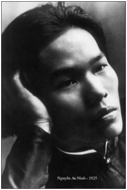

Nhóm Ngũ Long được coi như tượng trưng cho bước chuyển tiếp vào đầu Thế Kỷ XX giữa tầng lớp sĩ phu theo Nho Học cổ truyền với trí thức mới, trẻ, được đào tạo theo kiểu Châu Âu, đóng vai trò tiền cảnh trên sân khấu chính trị những năm 20.

Trở về nước vào năm 1922 với bằng Cử Nhân Luật, Nguyễn An Ninh vốn đã có thể tham gia dễ dàng vào xã hội thuộc địa, nhận một chức quan tòa án, được tặng thêm hàng trăm mẫu đất để khai khẩn, thế nhưng mối quan hệ xã hội giữa tầng lớp thực dân Pháp với người An Nam đã coi như sự phủ định cái quan niệm về đạo lý của anh. Do vậy Ninh đã dốc hết tâm lực vào công cuộc giải phóng anh em đồng chủng của mình. Cũng như Phan Chu Trinh, anh coi văn hóa như một phương tiện hành động ‘’chậm mà chắc’’ trên bước đường giải phóng xứ sở.
Noi theo phương pháp các đảng chính trị ở Pháp, anh phát biểu ngay với lớp thanh niên đất nước trong những cuộc hội họp công khai ‘’nhằm thúc dục thanh niên làm quen với nền văn hóa Âu Tây và cũng để cho người Pháp hiểu tôi hơn nhằm đánh tan mối nghi kỵ vô căn cứ của chính quyền coi chừng tôi’’, đó là lời phát biểu bằng tiếng Pháp của anh trong khi trình bày về ‘’Cao vọng của thanh niên An Nam’’ ngày 15 tháng 10 năm 1923.
Khi đó Ninh mới có 23 tuổi. Anh muốn lay động giới thanh niên học sinh, thúc đẩy họ dấn bước trên con đường nỗ lực tự học hỏi để có ‘’khả năng hiến thân vì dân tộc’’.
Nhằm mục đích giải phóng, anh tố cáo nền Khổng Học cổ truyền du nhập theo hàng hóa Trung Hoa, đã lỗi thời và hủ lậu, chỉ làm sản sinh một tầng lớp xã hội thượng lưu huyênh hoang tự mãn. Anh cũng tố cáo cái học thực dụng của nhà trường Pháp nhằm đào tạo ‘’nô lệ cho chính phủ Pháp’’.
Cho tới hiện nay, Ninh nói, ở Việt Nam chỉ có vài con người đủ sáng suốt để chăm lo đào tạo lớp trẻ trở thành những người có khả năng gánh vác nên độc lập trong tương lai và giữ gìn tự do, trong khi đó ở Ấn Độ, một xứ sở cũng trong vòng nô lệ như nước ta, lại có những Thi Sĩ như Rabindranath Tagore, những Nhà Văn, những Nhà Phê Bình như Ananda Coomaraswamy tránh những hoạt động vô hiệu, đã hết lòng vì sự nghiệp giáo dục nhân dân. Những người Ấn Độ đó đã thành lập nên ba trường học quan trọng; đó là trường của Tagore ở Bolpur, trường của Kalasala ở Masulipatnam và trường của Gurukulam ở Haridwar.
Ninh đã mô tả trường của Gurukulam như một mẫu mực. Trường này lấy học sinh vào học bất kể giàu nghèo. Giáo dục được miễn phí, các thày giáo đều tình nguyện. Bảy năm đầu dành cho việc học tập về đạo đức và luân lý thông qua các văn bản tiếng Phạn ở miền Bắc Ấn Độ và rèn luyện thể lực. Trong mười hai năm sau đó, nhà trường giảng dạy về văn học, triết học và khoa học Phương Tây. Học trò sống với thày giáo; đối với gia đình, chỉ được gặp người mẹ thôi. Tới hai mươi nhăm tuổi, họ đã trở thành một người có ích cho xã hội. Cái tinh túy của nền văn hóa cổ Ấn Độ rất hòa hợp với những kiến thức hiện đại hữu ích. Một nỗ lực tương tự đối với nữ sinh nhằm sau này trở thành những đôi vợ chồng có ngang tầm trí tuệ.
Nước ta, cả trường công lẫn trường tư đã làm mù trí óc của thanh niên, bởi chính phủ thực dân cần có một dân tộc yếu hèn và nô lệ. Thật đáng thương thay khi thấy nhà trường sản sinh ra một loại người bị thuần hóa thành tôi tớ như thế.
Trong khi đại đa số người An Nam lao động quần quật để có miếng cơm manh áo thì một thiểu số lại còn cố trích máu mủ của họ dâng cho một cường quốc Châu Âu. Sứ mạng của chúng ta hiện nay là phải chuẩn bị cho nông dân đứng lên đấu tranh, là ‘’làm sản sinh những hạt nảy mầm thành cây trong tương lai’’.
Nền độc lập mà chúng ta mong muốn không nằm trong hiện tại. Muốn có tự do ta phải chuẩn bị thông qua những nhu cầu và phương thức hành động của nó. Không phải cái nền văn học do ông cha ta truyền lại làm cho đầu óc chúng ta sáng sủa, bởi nó chỉ toát lên một tinh thần suy thoái, mệt mỏi, hấp hối. Chúng ta phải tự thoát ra khỏi cái luận lý chật hẹp làm cho chúng ta tê liệt và què quặt, phải thắng được những dư luận ngu ngốc, vượt lên trên cái tầm thường là hy vọng một cuộc sống dễ chịu, vượt qua sự hèn nhát nó làm mê muội ta đi. Cái cần cho thanh niên hiện nay là phải nắm được những nền tảng về trí tuệ và về khoa học cần thiết cho việc xây dựng nền tự do bước đầu cho đất nước.
Các bạn hãy rời khỏi núi non sông hồ của chúng ta. Đến khi nào, bằng con mắt sáng sủa, chúng ta đã nhìn ngó thế giới và xã hội loài người, chúng ta sẽ hiểu chúng ta hơn, và chúng ta sẽ lại trở về đây, trở về nơi chôn rau cắt rốn của chúng ta, nơi mà tinh thần sáng tạo và trí sáng suốt của chúng ta đem lại hữu ích.
Cái mà chúng ta cần, không phải là những cái bắt chước nô lệ theo người ta, bởi nó sẽ không giải phóng cho chúng ta mà tệ hơn nó còn trói buộc ta lệ thuộc vào những kẻ mà ta bắt chước. Chúng ta cần có những cái sáng tạo của riêng mình xuất phát từ bầu máu nóng của chúng ta, xuất phát từ những sự nghiệp do chính chúng ta phản ứng mà tạo nên. Người ta thường hay nói tới vai trò văn minh khai hóa của nước Pháp mà đại diện là tầng lớp cầm quyền hiện nay. Người ta đã tôn sùng một cách đê hèn ‘’những người đem ánh sáng tới’’, ‘’những người tạo nên những đều kỳ diệu ở Á Châu’’, tưởng chừng như những kẻ thô kệch do Bộ Thuộc Địa gửi sang, chứ không phải do nước Pháp trí tuệ gửi sang, sẽ có khả năng trong một thời gian ngắn nạn được, như với một chất bột nhão, cái tâm hồn của một chủng tộc trở thành một tác phẩm hoàn hảo. Người ta đã viết một cuốn sách có nhan đề Sự mầu nhiệm của nước Pháp ở Á Châu.Thế thì sự mầu nhiệm đó là gì? Quả là một sự mầu nhiệm vì chỉ cần một thời gian quá ngắn ngủi người ta đã hạ thấp được tới mức ngu tối dày đặc một cái trình độ trí tuệ vốn đã quá thấp rồi, dồn đẩy một dân tộc có những tư tưởng dân chủ vào một tình trạng nô lệ hoàn toàn. Nói đến vai trò giáo dục, vai trò khai hóa văn minh của bọn đầu thầy ở xứ Đông Dương này, thưa các ngài, thật buồn cười.
Những kẻ chính thức đại diện cho nước Pháp ở Đông Dương chỉ có thể nói tới những công trình xây dựng hoang phí, những đường sắt, những công xưởng hao người tốn của, những đường cáp ngầm, việc duy trì một đôi quân công chức khổng lồ, những công trái quốc gia hàng năm, tóm lại, đó là sự bóc lột quá mức ở Đông Dương. (23)
Sau bài diễn thuyết phê phán quyết liệt trên, Ninh được Cognacq, Thống Đốc Nam Kỳ gọi lên:
- Chắc ông Thống Đốc cũng đã nhận xét là tôi nói toàn những điều có tính chất trí tuệ...
- Đất nước này quá tầm thường, Thống Đốc ngắt lời, nếu ông muốn làm công việc trí tuệ, xin mời ông sang Moscou. Hãy hiểu rõ rằng cái hạt giống mà ông muốn gieo ở đất này không bao giờ mọc mầm cả đâu, ông đi bất cứ nơi nào cũng vẫn gặp ông Đốc-tờ Cognacg này, người của tôi luôn báo cho tôi bất kỳ một hành đông nhỏ nào của ông, cái đất Nam Kỳ này, chốn chốn phải tuân lệnh tôi, và nếu như ông vẫn cứ ngoan cố thì Thống Đốc Cognacq sẽ sẵn sàng dùng đến những phương tiện cuối cùng. (24)
Thái độ thô bạo của Thống Đốc chỉ thúc đẩy thêm con người đầy cao vọng Nguyễn An Ninh về phía đối lập chính trị cụ thể hơn.
Một giai thoại sau đây sẽ cho ta rõ tính thô bạo thực dân và thái độ phản ứng quyết liệt của Ninh:
Một buổi tối ở rạp chiếu bóng. Một viên Đại Úy và một viên Trung Úy bộ binh thuộc Hải Quân Pháp đang ngồi xem ở phía sau Ninh.
Ghế của Ninh ở ngay trước ghế của viên Trung Úy. Viên Trung Úy nắm lấy lưng ghế lay mạnh và bảo Ninh:‘’Sao mày không chịu ngồi yên hả...mày không cho tao xem à...’’. Ninh trả lời bằng một giọng lễ phép kiểu Á Đông rằng anh không quen nghe người ta nói với mình bằng cái giọng ấy, hơn nữa nếu như người ta bảo Ninh làm ơn dịch ghế ra thì anh sẵn sàng làm ngay. Viên Trung Úy vẫn tiếp tục sẵng giọng mày tao với Ninh; Ninh cũng mày tao trở lại làm cho viên Trung Úy nổi điên. Khi viên Trung Úy buông một lời thô tục, Ninh nhấc ngay chiếc ghế giơ cao lên. Những người An Nam có mặt vội giữ cánh tay Ninh. Nếu lúc ấy Ninh đập cái ghế xuống thì tất cả người Châu Âu có mặt trong rạp sẽ nhảy xổ vào Ninh. (25)
Chưa đầy hai tháng sau lời cảnh cáo của Thống Đốc Nam Kỳ, ngày 10 tháng chạp năm 1923, Ninh tung ra tờ báo Chuông Rè (La Cloche fêlée), có đề câu ‘’Cơ quan truyền bá tư tưởng Pháp’’, thoạt nghe có vẻ lạc lõng, nhưng vừa có tính mềm dẻo ngoại giao vừa có tính thành thực. ‘’Những tư tưởng Pháp’’ này không phải là những tư tưởng của bọn chủ tỉnh và bọn thực dân, mà là những tư tưởng về tự do dân chủ. Ninh tuyên bố: ‘’Sự đè nén áp bức chúng ta xuất phát từ nước Pháp, nhưng tinh thần giải phóng cũng xuất phát từ nước Pháp’’. (26)
Tờ báo ra bằng tiếng Pháp vì mọi sự ấn hành bằng chữ Quốc Ngữ đều phải được phép trước. Người đứng ra làm quản lý tờ báo là một người có cảm tình với Ninh, một người Pháp lai, tên là Dejean de la Bâtie.
Báo Chuông Rè tấn công vào chính quyền thực dân và xã hội thực dân, từ Thống Đốc Cognacq cho tới những tên thực dân khác; tờ báo mở đầu cho sự đối lập công khai ở Nam Kỳ giữa báo chí với chính quyền, thử nghiệm những khả năng hợp pháp để kêu gọi đồng bào (nghĩa đen là cùng một bào thai) thức tỉnh và thúc dục họ tự mình chuẩn bị cho tương lai của ‘’Dân Tộc Đông Dương’’. Số báo ngày 21 tháng 4 năm 1924 hô hào thanh niên học sinh, tương tự như nội dung cuộc nói chuyện hồi tháng 10 năm 1923, hãy sang Pháp học hỏi, bên ấy có nền văn hóa tự do và sự tiếp xúc xã hội dễ dàng hơn.
Không phảilà ở đất nước này mà chúng ta tiếp thu học hỏi đưọc những gì mà chúng ta cần. Không phải những chính quyền ở Đông Dương hiện nay là nơi mà chúng ta đạt những hy vọng về tương lai của dân tộc. Một dân tộc nô lệ tin cậy ở người chủ để nhanh chóng quên đi những nguyên nhân mà người ta bắt mình làm nô lệ. Cái mà chúng ta cần, đó là những con người chỉ tin cậy ở chính mình, biết rằng có một nhiệm vụ, một sứ mạng được giao cho họ và dốc lòng hết sức vì giống nòi của mình. Quả là một niềm tự hào khi thấy từ đất nước chúng ta xuất hiện những con người như Phan Chu Trinh, Phan Bôi Châu, Nguyễn ái Quốc, những con người như Đề Thám, Lương Văn Can, Lương Ngọc Quyến và biết bao anh hùng vô danh khác; thế nhưng đối với đất nước An Nam không phải chỉ là việc lấy lại một nền độc lập sớm sủa, một nền độc lập sẽ có thể bị mất ngay sau khi chiến thắng do thiếu một ý thức kỷ luật và giáo dục về chính trị. Cái ngày mà đất nước ta có khả năng gìn giữ được tự do, cái ngày đó sẽ đến. Cũng còn một vấn đề là phải cách tân tâm hồn An Nam, không phải chỉ là nuôidưỡng những ước mộng lớn lao, mà còn phải có được một nhóm người có khả năng chuẩn bị cho tương lai.
Ta thấy đó là điều quan tâm thường trực của tầng lớp trí thức An Nam, kể từ đầu thế kỷ 20 với Phan Bội Châu đã nỗ lực vượt qua sự ngăn cản của chính quyền thực dân để tổ chức một tầng lớp thanh niên xuất dương du học tất nhiên bí mật sang Nhật Bản, chỉ một khi thoát khỏi được cái lồng sắt Đông Dương, mới có thế tự hiện đại hóa và có một tầm nhìn thế giới về mọi vấn đề.
Bản thân Ninh tự đi bán rao tờ báo trên các đường phố Sài Gòn. Các độc giả của Ninh, ngấm ngầm, chỉ là những người có khả năng hiểu biết tiếng Pháp, thầy giáo, học sinh, công chức người An Nam, họ liều đọc trong nỗi lo sợ bị rầy rà hoặc bị đuổi việc một khi bị bắt chợt đang đọc những ‘’bài viết phản loạn’’. Chính quyền thực dân ép buộc, chủ nhà in không dám tiếp tục cộng tác với Ninh; anh đành phải tự lập một nhà in thô sơ tại phố Pierre-Étienne Flandin, rồi từ một người vừa biên tập vừa đi bán báo, bây giờ kiếm cả thợ in.
Tại Pháp, cuộc bầu cử tháng 5 năm 1924 đưa được phái Tả vào Nghị Viện. Thuộc địa Nam Kỳ có quyền cử một đại biểu, thế nhưng tất nhiên để bầu được một đại biểu người Pháp vào đó thì số cử tri phải là công dân Pháp, hoặc gốc Pháp hay nhập quốc tịch Pháp như một số rất ít người An Nam và Ấn Độ. Paul Monin, một Trạng Sư xu hướng tự do, bất bình với những mưu đồ của chính quyền Cognacq, kể cả hợp pháp hay bất hợp pháp, đứng ra tranh cử chống đối Ernest Outrey, ứng cử viên về phái tài chính thuộc địa. Ông phô bày rõ ràng những nhũng lạm, những bất công của chính quyền thực dân đối với người An Nam, rồi tờ báo của Nguyễn An Ninh lên tiếng ủng hộ Monin. Tiếc thay, trong cuộc bầu ông thất thế với 626 phiếu, so với 1555 phiếu của Outrey. Sau đó vào tháng 6, tờ Báo Sự Thật (La Vérité) của Monin bị cấm. Chính quyền thuộc địa phản ứng càng quyết liệt hơn khi xảy ra vụ Phạm Hồng Thái - một lưu học sinh An Nam - ném bom vào Toàn QuyềnMartial Henri Merlin khi hắn ghé qua Quảng Châu, vào ngày 19 tháng 6 năm 1924. (27)
Báo Chuông Rè phải im tiếng một thời gian sau số 19 (14 tháng 7 năm 1924) khi Ninh, mượn cớ chuẩn bị thi lấy bằng Tiến Sĩ Luật Khoa, lên đường sang Pháp lần thứ hai để trú tại Paris trong một năm ngắn ngủi. Ở Paris, Ninh gặp lại Phan Chu Trinh và Nguyễn Thế Truyền. Truyền vẫn cộng tác với Hội Liên hiệp Thuộc địa và tờ báo Người Cùng khổ (Le Paria), còn Trinh vẫn đấu tranh đòi những quyền cơ bản đồng thời vẫn tiếp tục vận động để trở về nước một cách hợp pháp. Nằm ở nước ngoài để rung chuông gõ trống chẳng là một việc tốn công vô ích sao? Cuối cùng, vào tháng 5 năm 1925, Trinh nhận được giấy thông hành về Đông Dương cùng một vé tàu thủy hạng nhì, với số tiền là 5.000 franc, đó là tất cả các khoản gộp lại đối với số tiền trợ cấp mà ông đã bị cắt từ năm 1914, khi ông bị bắt.
Trước khi lên đường ba hôm, Ninh và Trinh tham dự cuộc mít ting tập hợp hơn 800 người Pháp và Đông Dương tại Khách Sạn Hội Bác Học (Hôtel des Sociétés Savantes); kết cuộc mít ting quyết nghị như sau:
Những người Pháp và Đông Dương tập hợp ngày 25 tháng 5 năm 1925 vào hồi 21 giờ, do ông Phan Chu Trinh chủ tọa, sau khi nghe các bản tường trình của ông Nguyễn An Ninh, Diệp Văn Kỳ và Dương Văn Giáo về tình hình chung ở Đông Dương, đã thông qua nghị quyết sau đây để gửi tới Chính Phủ Cộng Hòa, yêu cầu chính phủ xem xét tình hình hiện nay của Đông Dương để dự định những biện pháp khẩn cấp hầu bảo đảm cho Liên Bang Đông Dương:
- Một thể chế chính trị phù hợp với tình hình tiến triển hiện nay ở Đông Dương;
- Một đại diện hữu hiệu cho những quyền lợi cơ bản của Đông Dương tại Pháp và tại Đông Dương;
- Cho dân bản xứ đuợc nhập quốc tịch Pháp;
- Tự do báo chí bằng tiếng bản xứ và tiếng Hán;
- Tự do hội họp và lập hội;
- Tái lập quyền tự do giáo dục (đã bị bãi bỏ do nghị định ngày 14 tháng 5 năm 1924) (28)
- Bãi bỏ chế độ đặc biệt đối xử với ngưởi bản xứ (Indigénat);
- Đối xử bình đẳng giữa viên chức người Pháp và người bản xứ;
- Tự do di trú sang Pháp và sang nuớc ngoài;
- Xóa bỏ sự bất bình đẳng trong quân dịch;
- Áp dụng cho người bản xứ những luật lao động (nhất là về nghiệp đoàn và tai nạn lao động);
- Cải cách nền tu pháp ở Đông Dương bằng cách cung cấp cho dân bản xứ những bảo đảm pháp lý như người Châu Âu; chấp nhận cho người Đông Dương được dự thẩm án;
- Thành lập ở Paris một Ủy Ban Nghiên Cứu Đông Dương bao gồm các chuyên viên và kỹ thuật viên người Pháp và Đông Dương để giải quyết những vất đề cấp bách và thông báo cho chính phủ đuợc biết kịp thời những nguyện vọng của dân bản xứ. (29)
Ngày 28, Nguyễn An Ninh và Phan Chu Trinh lên tàu trở về Sài Gòn. Phan Văn Trường đang chờ họ ở đó. Thế là ba Con Rồng trong nhóm Ngũ Long lại cùng nhau đứng hàng đầu trận tuyến đối mặt với thực dân phản động.
Ninh mời Phan Chu Trinh về trú tại nhà anh ở Mỹ Hòa (Quán Tre, Gia Định), ở đó nhiều người có cảm tình tìm cách đến thăm ông già chiến sĩ bị ngược đãi này mặc dầu bọn lính kín và săn đầm kiểm soát gắt gao.
Phan Văn Trường lập văn phòng luật sư tại số 119 phố Patrice Mac-Mahon. Từ ngày 17 tháng 3 năm 1925 ông kêu gọi thanh niên Sài Gòn suy nghĩ về việc giáo dục học vấn trong dân tộc An Nam(30). Ông lên án việc ‘’sùng bái bằng cấp’’, do chế độ giáo dục của thực dân duy trì, thúc giục đồng bào lao vào học hỏi, sao chép và dịch sách để phát triển, làm phong phú, làm tinh tế thêm cho chữ Quốc Ngữ, thứ ngôn ngữ của đất nước đang kỳ thai nghén, sau sẽ trở thành thứ ngôn ngữ đóng vai trò xứng đáng trong mọi lĩnh vực, văn học, nghệ thuật và khoa học, tất cả sẽ góp phần làm nảy nở ‘’tâm hồn dân tộc’’.
Ngày 17 tháng 6, Paul Monetvà André Malrauxtung ra tờ báo Đông Dương (L'Indochine) để ‘’bảo vệ dân bản xứ’’. Lúc đó có những tin tức vang vọng từ Trung Hoa về những cuộc phu phen, thợ thuyền và thủy thủ Trung Quốc đình công phản đối những điều kiện lao động gần như nô lệ ở Thượng Hải, Hương Cảng, Quảng Châu. Tin về những cuộc biểu tình chống đế quốc Nhật, Pháp, Anh đã diễn ra sau vụ bọn Nhật tàn sát công nhân ở Thanh Đảo, sau những loạt liên thanh của bọn Anh và Pháp bắn chết mười hai sinh viên ở Thượng Hải và khoảng 50 người khác ở Quảng Châu. Trên tờ Đông Dương ngày 30 tháng 6, Phan Văn Trường viết:
Chúng ta hãy theo dõi chăm chú những sự biến ở Trung Hoa. Những sự kiện này sẽ có ảnh hưởng khắp thế giới. Chúng ta đừng bao giờ quên rằng số phận của chúng ta có liên quan mật thiết với số phận của cả vùng Viễn Đông.
Những người bị bóc lột ở Trung Hoa nổi dậy đã ảnh hưởng đến anh em của họ ở Đông Dương phải chăng? Họ có hưởng ứng chăng, ta chỉ biết rằng cuộc bãi công đã nổ ra ở Sở Ba Son (xưởng Thủy Binh) Sài Gòn ngày 4 tháng 8 năm 1925 khi một trong ba tàu chiến, chiếc Jules Ferry, cần sửa chữa gấp rút để điều động sang Trung Hoa. Một ngàn người gồm thợ, phu và nhân viên Sở Ba Son ngừng làm việc và tập hợp tại Đại Lộ Luro (Cường Để)dọc theo xưởng tàu binh. Chưa bao giờ người ta thấy có một cuộc đình công quy mô như vậy trong một công sở nhà nước, nơi mà những người lao động có được công việc tương đối ổn định và đồng lương không đến nỗi khốn khổ như những nơi khác. Nguyễn An Ninh kêu gọi thợ thuyền và nhân viên ở khắp các công xưởng khác hãy đoàn kết với các bạn đang đấu tranh. Đến ngày thứ 8, viên chỉ huy hàng hải phải chấp nhận thương lượng với bốn đại biểu công nhân đòi tăng 20% lương, đòi xếp việc cho những công nhân bị giảm trước đó và đòi phải dừng giờ làm việc vào hồi 17 giờ chứ không phải là 17 giờ 15 vào ngày trả lương. Phía đình công thắng cuộc.
Alexandre Varenne, Toàn Quyền Đông Dương
Phong trào thợ thuyền sôi nổi trong các cảng ở miền Nam Trung Hoa và sự sôi động trong dân chúng ở Nam Kỳ đã đủ làm bận tâm Cánh Tả nắm quyền ở Pháp, họ tìm cách làm dịu phong trào của nhân dân An Nam bằng cách cử Varenne, đảng viên Đảng Xã Hội, một đại biểu quốc hội có tinh thần cải cách, sang làm Toàn Quyền Đông Dương, ngày 29 tháng 7 năm 1925.
Trong khi tầng lớp thực dân coi sự chỉ định này như một sự khiêu khích thì giới tư bản bản xứ xu hướng lập hiến lại cảm thấy có hy vọng. Tại Paris, Dương Văn Giáo, lãnh tụ Lập Hiến là tuyên bố: ‘’Chính phủ của nền Cộng Hòa ngày nay dường như cũng đã đồng ý soi rọi đôi chút ánh sáng vào cái đống đổ nát do một thứ chủ nghĩa thực dân lỗi thời tích tụ từ nhiều năm nay ở Đông Dương.’’ Rồi ở Sài Gòn họ lo chuẩn bị để trình cho quan Toàn Quyền những điều trần và nguyện vọng của họ.
Ngày 18 tháng 11, Varenne bước chân lên Cảng Sài Gòn trong bộ âu phục thường chứ không phải trong bộ quân phục hào nhoáng chướng mắt. Tờ báo Đông Dương Bị Xiềng (L'Indochine enchainée), thay thế cho tờ Đông Dương, đã được đem phát không. Trên đó có đăng một bức thư ngỏ của hai người phụ trách tờ báo là PaulMonet và André Malraux gửi cho vị Toàn Quyền mới. Bức thư trình bày những điều kiện bất hợp pháp trong các cuộc tuyển cử ở Nam Kỳ dưới áp lực của chính quyền Cognacq. Bức thư tố cáo những mưu đồ về tài chính, những mưu mô kiềm chế báo chí, việc Cognacq có dính líu tới vụ bê bối về ruộng đất ở Cà Mau trong đó 387 nông dân bị tước đoạt ruộng đất (tác giả công bố sẽ gửi tới Varenne ‘’hơn năm chục lá đơn kêu nài hợp lệ, rõ ràng và có ký tên liên quan tới vụ bê bối đó’’), cuối cùng lá thư tố cáo Cognacq và bạn bè của ông ta mưu đồ muốn biến Nam Kỳ thành khu rừng cấm dành riêng cho họ săn thịt.
Sáu ngày sau, viên Hội Đồng Quản Hạt Nguyễn Tấn Dược phê phán nghiêm khắc những điều không chính xác trong Sách Xanh (Livre Vert), bản báo cáo hàng năm của thống đốc thông tư hội đồng quản hạt. Làm sao Cognacq có thể cho rằng tình hình dân chúng là ổn định và sung sướng khi hắn đề nghị một khoản tăng lớn trong ngân sách, không phải để xây dựng trường học và dịch vụ y tế, mà là để cung cấp Dở Mật Thám, một cơ quan giám sát chính trị chi phí tốn kém ‘’chuyên theo dõi và tìm bắt những con người chỉ sai lạc là phát ngôn những ý tưởng có tính chất phiến loạn bất kể là đúng hay sai, và không tuyệt đối tận tâm với các nhà cầm quyền đương thời’’.
Được tố cáo tất cả những điều tai hại đã giãi bày qua bức thư ngỏ, chẳng e ngại gì Cognacq cùng số đông chủ tỉnh người An Nam thường hay nịnh bợ chủ Pháp để vinh thân phì gia. Ông nhắc lại sự bất công về mặt thuế khóa, sự khốn khổ của người nông dân chỉ có thể đi vay nặng lời, trong khi chính quyền lại cho những nhà kinh doanh và bọn chủ vườn cao su vay nhẹ lời; ông nhắc cái thời hạn quá lạm, người An Nam xấu số bị bắt đi lính - bốn năm -, bị bất kỳ gửi đi sang tận Syrie và Bắc Phi để đàn áp những cuộc nổi dậy...Một số hội đồng quản hạt khác, như Luật Sư Gallet, người bảo vệ Nguyễn An Ninh trước tòa án, như Trương Văn Bền cũng theo hướng phê phán đó. Tuy vậy ngân sách mà Cognacq đề nghị cũng được hai phần ba số hội đồng bỏ phiếu chấp thuận, còn Varenne y tỏ thái độ như không biết mọi chuyện. Các báo chí theo chính phủ im lặng không nêu lên chút gì đáng kể trong buổi họp đó, trong bầu không khí giông bão; chỉ có tờ Đông Dương Bị Xiềng số 7 có tường thuật chính xác và tỉ mỉ.
Trước hôm lên đường ra Huế và Hà Nội, ngày 28 tháng 11, Varenne lại có dịp để nắm tin tức. Thủ lĩnh Lập Hiến Nguyễn Phan Long trình lên Toàn Quyền những đơn dân bản xứ khiếu nại và một Tập đơn thỉnh nguyện của khoảng 600 nhà tư bản, địa chủ và hương lý từ các tỉnh chạy đến. Varenne hứa hẹn mơ hồ sẽ ra lịnh điều tra và trấn chỉnh nhũng hà lạm, nhưng tới việc xuất bản tự do báo chí bằng chữ Quốc Ngữ thì Varenne khước từ: Những người làm báo Quốc Ngữ, vì chưa chuẩn bị để hưởng dụng quyền tự do một cách khôn ngoan, sẽ lạm dụng và tung ra những lời quá khích trong tư tuởng của họ do đó gieo rắc sự rối loạn trong xứ, rồi một làn sóng phản đối sẽ sớm nổi lên.
Không biết có phải do Cognacq và những người xung quanh nịnh hót xoa dịu không, để đến mức Varenne thốt ra một cách mềm dịu: Thôi, chúng ta hãy quên quá khứ! Một thái độ đã bị báo Đông Dương Bị Xiềng châm chọc: ‘’Hôm qua là đảng viên xã hội, hôm nay đã là bảo thủ thượng thặng trong số những kẻ bảo thủ danh tiếng, lại thêm một sự đổi thái độ dưới dấu hiệu của đồng bạc Đông Dương’’.
Varenne chỉ giữ chức Toàn Quyền cho tới tháng 10 năm 1927, bởi lẽ cánh hữu ở Pháp cũng như bọn thực dân ở Đông Dương khó mà chấp nhận việc ông ta ân xá ông già phiến loạn Phan Bội Châu, cái xu hướng ông ta cho phép thêm nhiều sinh viên sang Pháp học, sự ông khước từ lập lại ngạch trưng thuế cờ bạc, cùng sự ông ta quan tâm đến các Viện Dân Biểu ở Trung Kỳ và Bắc Kỳ(31) hai viện này rồi sẽ được các viên thống sứ cải thành những cơ quan tư vấn theo đuôi, và từ đó những người An Nam trung thực sẽ từ chối tham gia. Phái hữu ở Pháp cũng không tha thứ ông ta khi đọc bài diễn văn, Varenne chỉ có hơi hướng của chủ nghĩa nhân văn, phần nào còn mang ảo tuởng về một nuớc Pháp thi ân bố đức, mà tờ báo Thời Đại (Le Temps) ngày 12 tháng 3 năm 1926 đăng lại cái đoạn văn đáng để lên án sau đây:
Xứ Đông Dương đang tìm số phận của mình. Người ta có thể nghĩ rằng nước Pháp một khi sứ mạng đã hoàn thành, sẽ không đòi hỏi vai trò nào nữa trong cuộc sống ở bán đảo này, hoặc để lãnh đạo hoặc tư vấn cũng không nữa. Liên hợp với nước Pháp hay tách khỏi nước Pháp, thống nhất hay phân chia, không ai có thể biết được tình hình sẽ ra sao trong vòng một thế kỷ nữa đối với nhóm dân tộc mà chúng ta đã tập hợp lại dưới quyền bảo hộ của chúng ta.
Rồi tờ Thời Đại kết luận:
Chính phủ của ông Aristide Briand hiện nay thấy có hai điều cần thiết là phải cảnh báo cho Toàn Quyền Đông Dương về những lời của ông ta đã phát ngôn rất hiểm nguy và yêu cầu ông ta phải minh định cho rõ cái chủ thuyết thực sự của ông ta.
Một tập đoàn thực dân đang bị thất vọng trong việc kiếm lợi lớn trong việc cho thuê các sòng cờ bạc cùng một bộ máy quan quyền đang khát khao quyền lực và tiền bạc, đã toa rập nhau cổ động đầu độc oai thế quan Toàn Quyền Đông Dương, rốt cuộc chiến dịch ấy đã thắng ‘’người chính nhân quân tử’’ là ông Alexandre Varenne.
Phan Chu Trinh:Đạo đức và Luận lý Đông Tây
Vào hôm sau ngày Toàn Quyền xu hướng xã hội chủ nghĩa tới Đông Dương, Cụ Phan (Phan Chu Trinh) được một mớ thanh niên trí thức Việt Nam mời nói chuyện về Đạo Đức và Luận Lý Đông Tây(32) trong một quán cà phê của người Pháp tại góc phố Richaud (Phan Đình Phùng)và Đại Lộ Albert 1er (Đinh Tiên Hoàng), hôm ấy nhằm ngày 19 tháng 11 năm 1925. Một ngàn người tập hợp tại đó, phần lớn là thanh niên, trước hết họ đến là để tỏ lòng ngưỡng mộ đối với người chiến sĩ già từ chốn lưu đày trở về xứ sở. Đám đông tràn ra cả ngoài sân. Cụ khởi nói:
Anh em đồng bào thấy tôi là người tuổi tác, ở lâu năm bên nước Pháp mới về, anh em đồng bào có lòng quá yêu, nhường cho tôi bước đầu lên diễn đàn để tỏ ý kiến và hy vọng của tôi đối với xã hội Việt Nam ta từ ấy đến giờ, thì tôi lấy làm cảm tạ vô cùng.
Không nói, tưởng anh em đồng bào cũng đã biết, tôi vì quyền lợi của dân tộc Việt Nam mà phải lăn lóc đến mười tám năm nay. Trong khoảng 18 năm (hơn 14 năm ở Pháp) thường mong mỏi được gặp mặt anh em đồng bào nơi cốhương, đặng tỏ chút ý kiến về những sự đã được nghe thấy trong khi trôi nổi nơi đất khách quê người.
Không ngờ giấc mộng được thành, trở về nơi chôn nhau cắt rốn, giáp mặt anh em đông đủ thế này. Tôi vui mừng quá.
Sau đó Cụ trình bày đại lược như sau: Cái nền đạo đức của chúng ta giống như một trái quả khô héo, chúng ta phải tự trách lấy chúng ta và phải làm sao làm sống lại cái đạo đức đó. Đạo Đức, chính là cái làm cho nên người, ở mọi thời đại, ở khắp mọi nơi chính đạo đức là cái làm cho con người xứng đáng làm con người, nghĩa làn có lòng nhân, sự công bằng, tương kính lẫn nhau, biết lẽ phải, giữ lời hứa, tham gia sự lao động cần thiết. Cái đạo đức ấy nằm trong lời dạy của Khổng Tử: ‘’Khi ta làm điều thiện, Trời Đất sẽ giúp ta, khi ta làm điều ác, Trời Đất sẽ diệt ta’’, hay như câu của Mạnh Tử: ‘’Khi mình tự khinh mình thì người khác sẽ khinh mình’’.
Ngược lại luận lý là tùy thuộc từng nơi chốn từng thời đại, nó giống như y phục, thay đổi theo quyền lực; cái chế độ quân chủ cổ lỗ của chúng ta kéo theo nó những quy tắc luân lý, không những là cái luân lý gia đình mà theo thời gian đã đi tới chỗ độc đoán đáp ứng với sự chuyên chế của nền quân chủ, trong đó trẻ con đã phải tập thói quen tuân phục và tiếp thu tinh thần nô lệ, trong đó vợ phải vâng lời chồng, đồng thời nó còn kéo theo cả một nền luân lý quốc gia còn tệ hại gấp đôi, bởi lẽ từ thời cổ xưa, nó chỉ gồm trong hai chữ, vua tôi; người dân không có quyền can thiệp vào công việc quốc gia, họ không có quyền công dân. Tại Châu Âu, nền luân lý gia đình đã nhường bước trước nền luân lý quốc gia, song những quốc gia Châu Âu là những quốc gia hiếu chiến, gây những cuộc chiến tranh chẳng có lợi cho ai. Những quốc gia ấy và quốc gia của ta ngày nay phải cùng tiến tới thời đại xã hội xóa bỏ bất công và phân chia giai cấp. Thời đại xã hội đã được hé mở bởi nhiều triết gia lớn, những văn sĩ, thi sĩ, ở phương Đông cũng như phương Tây; đó sẽ là thời đại của đạo đức, của ‘’tâm đạo’’ chứ không còn là thời đại của tương quan lực lượng. Ở Châu Âu hiện đã có những tầng lớp thanh niên xã hội chủ nghĩa, những thanh niên dân chủ, mà tầm nhìn của họ vượt biên giới quốc gia. Con đường sẽ còn dài, bởi lẽ nếu như xu hướng xã hội chủ nghĩa nẩy nở ở Châu Âu, thì ở nước ta vẫn có phương châm sống chết mặc bây; người ta quên nhân dân; quên nỗi thống khổ nghèo nàn của họ; người ta còn lo học vì danh lợi, vì địa vị; dân càng nô lệ, ngôi vua càng mạnh và các quan càng giàu; cái tinh thần ấy lan đến cả những thầy thông, thầy ký, thậm chí đến cả cậu bồi, anh bếp; ai ai cũng mong trở thành thầy ký, ông chánh...để lại đè nén người khác. Nếu chúng ta muốn rằng một ngày nào đó nước nhà độc lập thì hãy tuyên truyền lý tưởng xã hội chủ nghĩa, tinh thần tương thân tương ái.
Từ hơn sáu mươi năm nay, dưới sự bảo hộ của một nước dù sao cũng rất văn minh, thế mà Sở Mật Thám Pháp vẫn cứ ghi tên chúng ta vào sổ đen khi chúng ta nói đến yêu nước, họ ghép chúng ta vào tội âm mưu lật đổ chính quyền. Chúng ta đừng để bị tê liệt nữa. Nếu như người Pháp không cho phép chúng ta yêu nước và đẩy chúng ta vào chỗ tuyệt vọng, thì ta sẽ không mắc tội lỗi gì nếu ta tỏ ra không trung thành với họ. Tôi không nói đến chuyện khích động nổi dậy hay phải ép mình nhờ vả nước này nước khác để tạo nên những sự khuấy động trong nước, vì điều đó sẽ làm chúng ta lệ thuộc vào người. Chúng ta phải trải qua một giai đoạn hai ba chục năm theo một nền luân lý quốc gia mới, giành được một tinh thần tự do, rồi chúng ta mới tiến tới một nền luân lý xã hội. ‘’Người ta có thể giết chứ không thể làm nhục một kẻ sĩ’’ (Sĩ khả sát bất khả nhục). Chớ để giàu sang làm ta mê đắm, chớ để nghèo nàn làm ta biến đổi, chớ để cường quyền làm ta cúi đầu, đó mới là người chân chính (Phú quý bất năng dâm, bần tiện bất năng di, uy vũ bất năng khuất, thị chi đại trượng phu). Mạnh Tử nói rằng dân là quý nhất. Dân phải làm gì khi vua là hôn quân? Mạnh Tử không trả lời câu hỏi đó, nhưng lịch sử đã có câu trả lời: Vua ác thì dân diệt.
Chúng ta hãy coi chừng đừng giục dân nổi dậy với giáo mác, gậy gộc; đừng phơi mình ra để chết vô ích; làm như thế chỉ tạo thêm sự cao ngạo và đè nén áp bức của những kẻ xu nịnh.
Ngày 27 tháng 11, trong một cuộc nói chuyện thứ hai, Phan Chu Trinh bàn về Quân Chủ và Dân Chủ (33)